d <- tibble(A = c(1, 2, 3, 5), B = c(2, 6, 4, 4.5))
ggplot(data = d) + geom_line(mapping = aes(x = A, y = B))Weitere Geoms und Aufbereiten von Plots
1 Linienplots mit geom_line()
Minimalbeispiel geom_line()
geom_line()funktioniert im Prinzip genau wiegeom_point()
BIP Länder (erster Versuch)
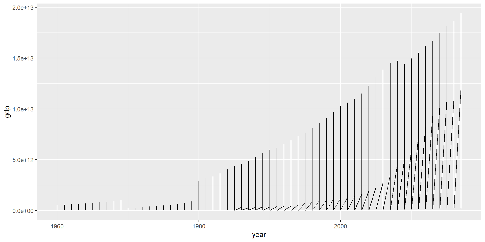- Nicht klar, dass nur Punkte derselben Länder verbunden werden sollen!
BIP Länder (zweiter Versuch)
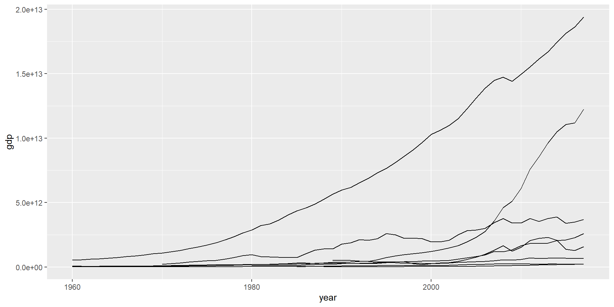- Mit
group = <M>angegeben, welche Punkte zusammengehören
BIP Länder (mit Farbe)
- Einfärben mit
color = c
BIP Länder: Farbe und Population
size = slegt Linienstärke festlineend = "round"bei sehr dicken Linien
2 Was es sonst nocht gibt…
Liniensegmente mit geom_segment()

- Notwendige AES:
x,y,xend,yend, auch mit festen Werten
Rechtecke mit geom_tile()
- Notwendige AES: Mittelpunkt und Breite/Höhe
- tile wie Fliese
Rechtecke mit geom_rect()
- Notwendige AES: Koordinaten der Eckpunkte
- rect wie rectangle = Rechteck
3 Plots aufbereiten
Facetten mit facet_wrap
facet_wrap(~Merkmal): Für jede Ausprägung des Merkmals ein Plot- facet wie Facette, Seite und wrap wie umbrechen
- Anzahl der Zeilen (row) oder Spalten (col) mit
nrow = nroderncol = nc - Jahre 2014 - 2017 mit
filter()(später, Verweis)
Sortierung nach Häufigkeit 1/3
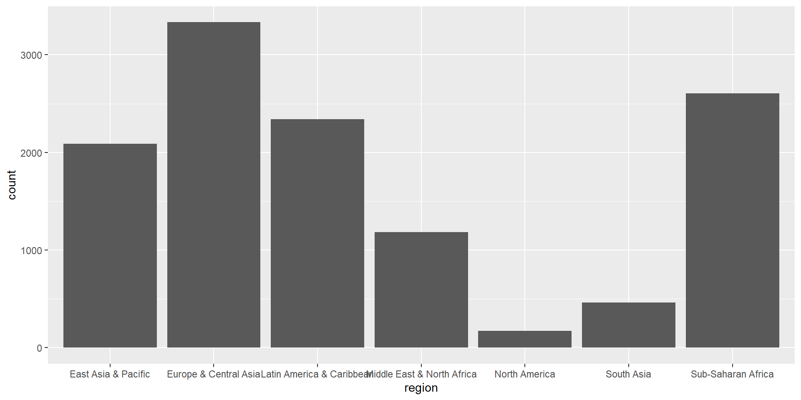- Standardmäßig wird alphabetisch sortiert
Sortierung nach Häufigkeit 2/3
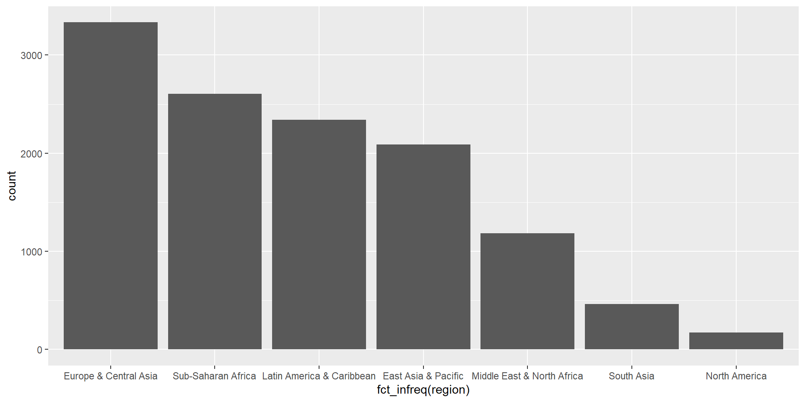- Nach Häufigkeit sortieren mit
fct_infreq() - fct wie factor = Faktor und infreq wie in frequency order = der Häufigkeit nach sortiert
Sortierung nach Häufigkeit 3/3
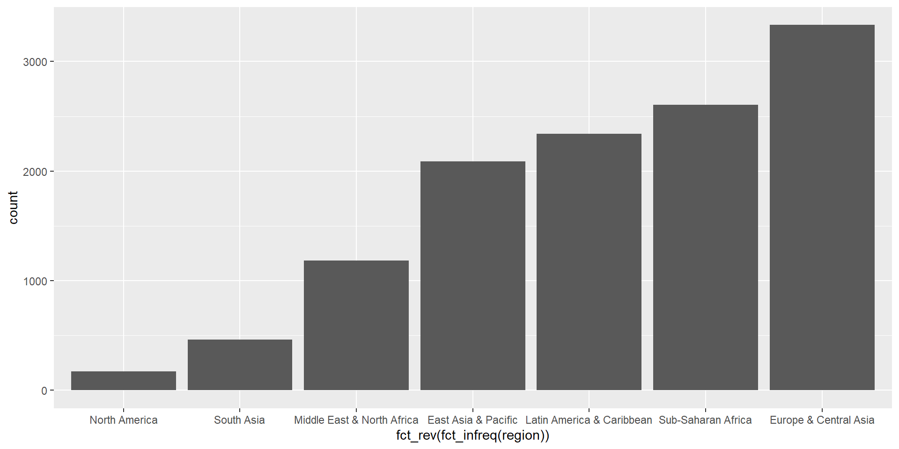- Ansteigend mit
fct_rev() - rev wie reverse = umgekehrt
Sortierung nach Merkmal 1/3
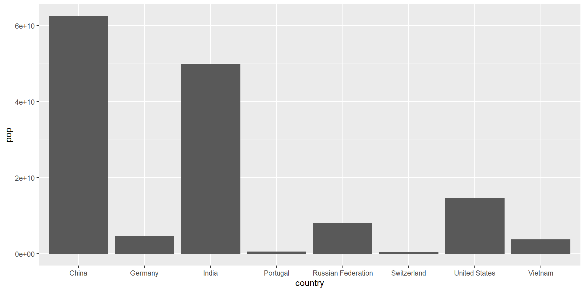- Standardmäßig wird alphabetisch sortiert
Sortierung nach Merkmal 2/3
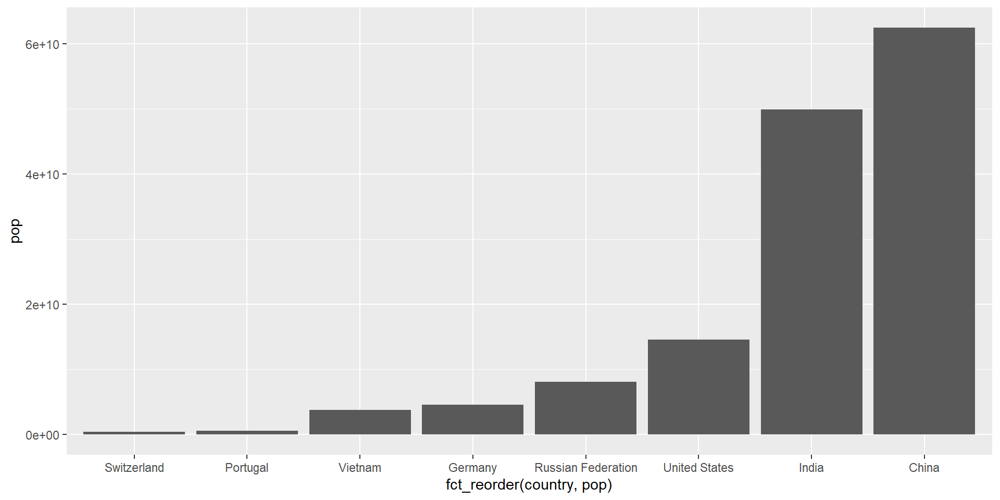- Nach Merkmal sortieren mit
fct_reorder()
Sortierung nach Merkmal 3/3
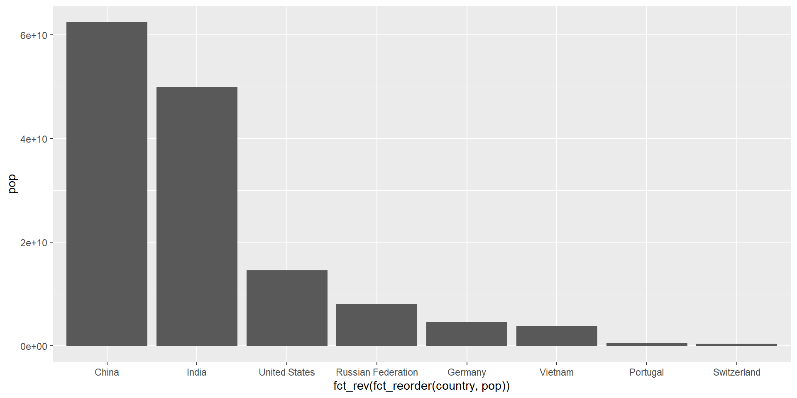- Absteigend sortieren wieder mit
fct_rev()
Skalen

Skalen regeln die Abbildung von Daten auf die Eigenschaften geometrischer Objekte (AES).
Form der Angaben zu Skalen: scale_AAA_BBB(<Arguments>)
| AAA | BBB |
|---|---|
| x,y | continuous, discrete |
| x,y | reverse, sqrt, log10 |
| color, fill | grey, hue, manual, brewer, … |
Darüber hinaus gibt es Skalen für alle anderen visuellen Eigenschaften (Transparenz, Linientyp, Shape, …). In der Regel muss man diese aber nicht anpassen.
Skalen werden automatisch eingefügt
Werden keine Skalen angegeben (so wie bisher), dann fügt ggplot automatisch sinnvolle Skalen ein. Aus
wird daher
Skalen anpassen: Selber dazuschreiben
Kontinuierliche Achsen: Achspunkte ändern
- Änderung der Beschriftung mit
breaks = b
Kontinuierliche Achsen: Möglichkeiten
| Argument | Beschreibung |
|---|---|
| breaks | Vektor mit Werten für Achspunkte |
| minor_breaks | Vektor mit Werten für zwischen-Achspunkte |
| limits | Vektor mit zwei Elementen für Begrenzung |
| labels | Vektor mit Beschriftung (selten) |
- Keine Punkte mit
breaks = NULLbzw.minor_breaks = NULL - Durch
limitswerden die entsprechenden Daten vor dem Plotten entfernt (manchmal nicht erwünscht). Alternativ die Plotgrenzen beicoord_cartesian()angeben (gleich)
Diskrete Achsen: Beschriftung ändern
- Änderung der Beschriftung mit
labels = l
Viele Werte nah am Ursprung
- Problem: Fast alle Werte liegen sehr nahe bei Null
Viele Werte nah am Ursprung: Logarithmische Skala
- Bereich wird für kleine Werte aufgezogen, für große Werte komprimiert
Weitere Skalen für Achsen
| Element | Wirkung |
|---|---|
| scale_x_sqrt(), scale_y_sqrt() | Wurzelskala |
| scale_x_log10(), scale_y_log10() | Logarithmische Skala |
| scale_x_reverse(), scale_y_reverse() | Umgedrehte Skala |
→ Definitionsbereich von Logarithmus und Wurzel beachten
Kontinuierliche Farbskala
Datensatz: Sinuskurve
Beispiel (nicht empfohlen)
scale_fill_gradient()erzeugt Farbverlauf mit zwei Farben
Beispiel (auch nicht empfohlen)
scale_fill_gradient2()erzeugt Farbverlauf mit drei Farben
Brewer-Farbpalette (empfohlen)
- Farbpalette von Cynthia Brewer (gleich mehr dazu)
Farbskala umgekehrt
direction = 1zeigt die Skala so an, wie sie definiert ist, Voreinstellung ist umgedreht
Mit diskreten Farbwerten

Mit logarithmischer Skala
- Viele Werte sehr klein wegen Y^16. Daher: Logarithmische Skalen
- Farben mit
trans = "log10"dem Logarithmus der Werte zuordnen
Definierte Farbskalen (kontinuierlich)
| Element | Argumente |
|---|---|
| scale_AAA_gradient | low, high |
| scale_AAA_gradient2 | low, mid, high |
| scale_AAA_distiller | palette |
| scale_AAA_fermenter | palette |
→ Für AAA je nach Anwendung entweder ‘color’ oder ‘fill’ einsetzen
Optionen für alle kontinuierlichen Farbskalen
| Option | Mögliche Werte | Funktion |
|---|---|---|
| direction | 1, -1 | Farbskala umkehren |
| guide | “colourbar”, “legend” | Kontinuierliche Skala oder diskrete Farben |
| trans | “idendity”, “log10”, … | Transformation für Werte |
Diskrete Farbskala manuell (erster Versuch)
- Zuordnung quasi zufällig
Diskrete Farbskala manuell (zweiter Versuch)
- Zuordnung mit
Ausprägung = Farbeangeben
Brewer-Farbpalette
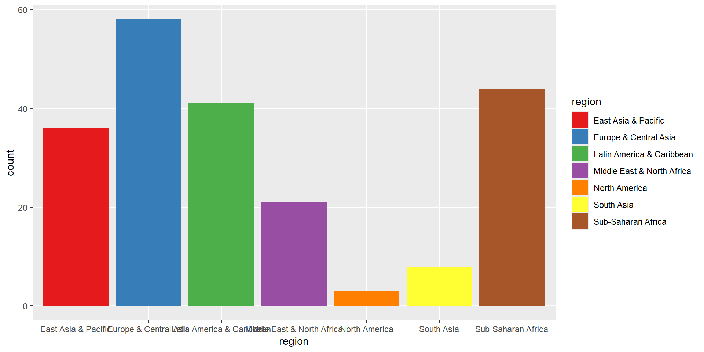Brewer-Farbpaletten

- Kontinuierlich:
scale_color_distiller(palette = p)oderscale_fill_distiller(palette = p) - Diskret:
scale_color_brewer(palette = p)oderscale_fill_brewer(palette = p)
Brewer-Farbpaletten

- Entwickelt von Cynthia Brewer
- Kartographin an der Penn State Universität
- http://colorbrewer2.org
4 Beschriftungen
Beschriftung mit labs()
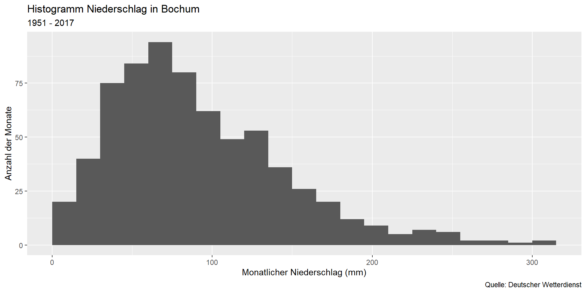Beschriftung der Farblegende
- Legende ebenfalls mit
labsbeschriften - Zum Beispiel für die Füllfarbe:
fill = Titel
Beschriftung entfernen
- Wert
NULLentfernt die Beschriftung und den dafür reservierten Platz
Beschriftung drehen
- Erste Möglichkeit, wenn Beschriftungen auf x-Achse zu lang
- Geschmackssache
Beschriftung versetzen
- Zweite Möglichkeit, wenn Beschriftungen auf x-Achse zu lang
- Auch Geschmackssache
5 Koordinatensysteme
Achsen vertauschen mit coord_flip()
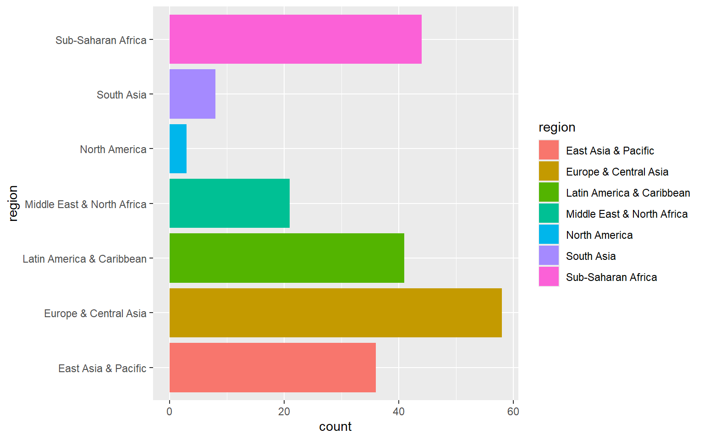- Vertauscht die x-Achse mit der y-Achse
Plotbereich mit coord_cartesian()

- Bereich festlegen:
xlim = c(xmin, xmax)undylim = c(ymin, ymax)
Polarkoordinaten mit coord_polar()
- Ein Wert wird zum Radius, der andere zum Winkel
- Variable (
"x"oder"y") für Winkel mittheta
Tortendiagramm (Wiederholung)
- Gestapeltes Balkendiagramm wird zum Tortendiagramm
theme_void()entfernt Dekoration (gleich)
Ringdiagramm (Wiederholung)
- Bereich der x-Achse anpassen
theme_void()entfernt Dekoration (gleich)
6 Themes
Voreinstellungen für Graphiken anpassen
Erscheinungsbild anpassen mit theme()
- Alle Plot-Elemente lassen sich mithilfe von
theme()anpassen - Insgesamt ca. 80 Einstellungsmöglichkeiten
- Tipp: Nicht zuviel Zeit damit verbringen
Voreingestellte Themes

- Vernünftige Voreinstellungen
theme_void()entfernt alles- Weitere Themes im Paket
ggthemes
Globale Einstellungen zu Beginn des Dokuments. Beispiel:
7 Farben ändern
Nicht allen gefallen die grauen Balken…
Farben für einzelnen Plot setzen
Problem: Viel Arbeit, wenn die Plots einheitlich aussehen sollen
Besser: Voreinstellungen global ändern
- Einstellungen für alle Plots zu Beginn des Dokuments
- Lässt sich später einfach ändern
Farben angeben
Mit dem Namen einer Farbe
- Zum Beispiel
"red"(mehr als 600 vordefinierte Farben) colors()gibt Namen der vordefinierten Farben- http://sape.inf.usi.ch/quick-reference/ggplot2/colour
Mit RGB-Wert
- Zum Beispiel
rgb(0, 0.7, 1)
Mit Hex-Wert
- Zum Beispiel
"#45e32f" - Farben in R standardmäßig als Hexadezimalzahl
8 Legenden entfernen
Methode 1: Legende für einzelne Skala

- Argument
guide = "none"für die Skala - Farbskala entfernen mit
scale_color_discrete(guide = "none" (PRÜFEN!!))
Methode 2: Alle Legenden für ein Geom
- Argument
show.legend = FALSEentfernt alle Legenden für ein Geom